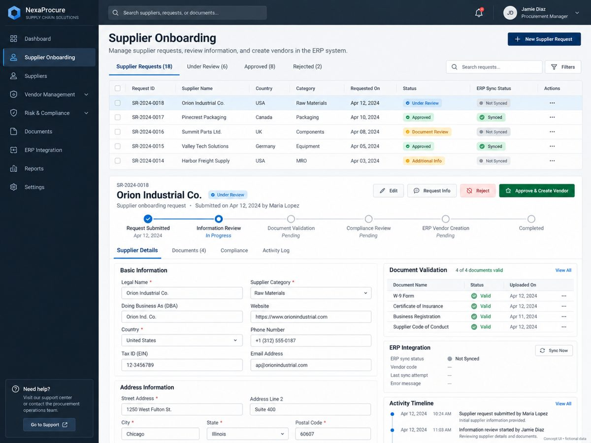

01 · SUPPLIERS
Supplier Onboarding & Administrative Workflow
Application created to improve how suppliers are requested, reviewed, documented and registered, reducing friction in internal administrative processes.
Web applicationWorkflow optimizationAdministrative operations
Core value Streamlines supplier creation and approval flow
Highlights Supplier registration and process traceability
Business area Internal administration and procurement support
Role Design, development and production delivery